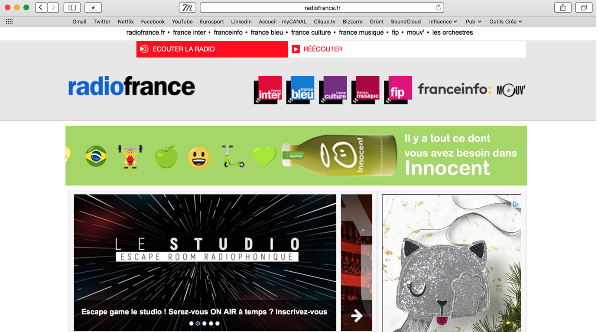
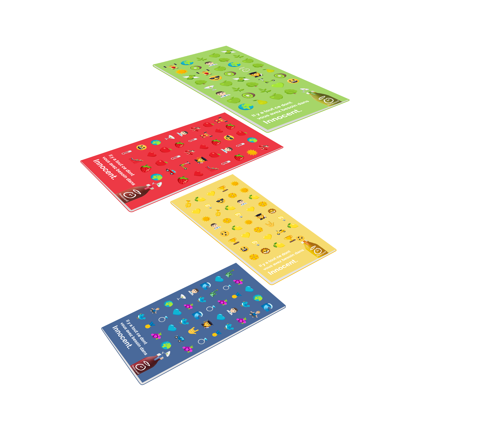

Innocent
A.D, Webdesign
BRIEF
Innocent, la marque de boissons connue pour ses smoothies, débloque un budget média pour la fin d'année. L'objectif est d'occuper le terrain un maximum afin de contrer les plus petits annonceurs qui se positionneraient aussi sur le créneau healthy, très en vogue en ce moment. Innocent veut communiquer sur sa naturalité, et surtout sur son expertise.
En effet, l'entreprise a été fondée en 1998, et soufflera l'an prochain ses 20 ans.
CREATIVE ANSWER
Les jus de fruits innocent représentent le meilleur des fruits, de leurs saveurs, de leurs apports même au délà de la santé... Les fruits sont la meilleure solution pour prendre soin de soi. Et buvant Innocent vous prenez soin de vous, de votre santé, de votre moral, de votre estime de soi, de votre confiance, de votre réussit, de votre bonheur. Avec Innocent vous prenez le contrôle de votre vie et tout vous réussit !
Pour développer ce concept nous avons choisi le côté fun, qui fait partie de l'identité de Innocent. Pour se faire nous utilisons l'expression universelle des Emojis. Vecteurs de bons sentiments, de légèreté, de fun, ils sont la traduction simple et impactante visuellement du concept.
I hope you will enjoy the presentation.


